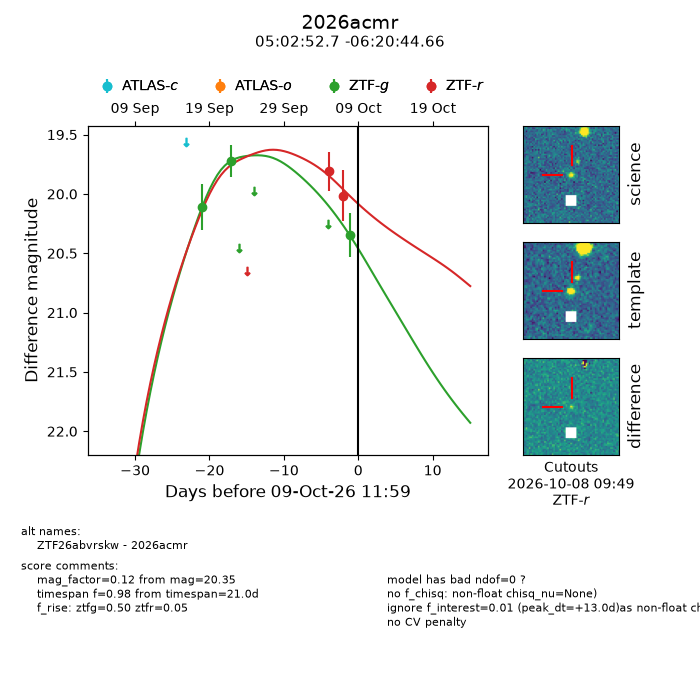
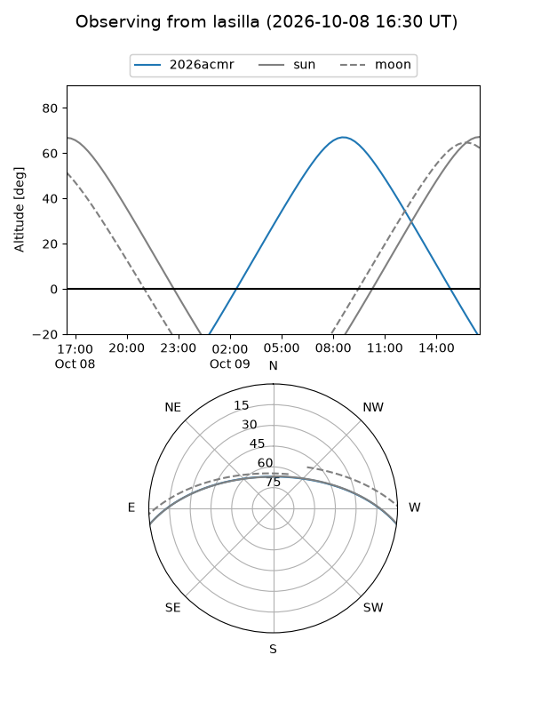
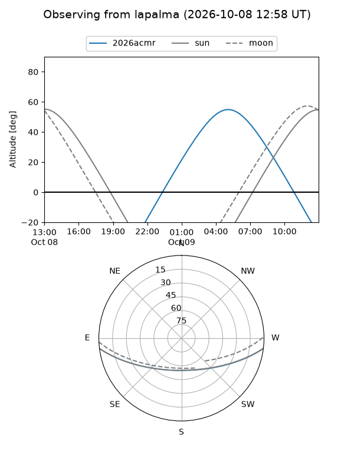
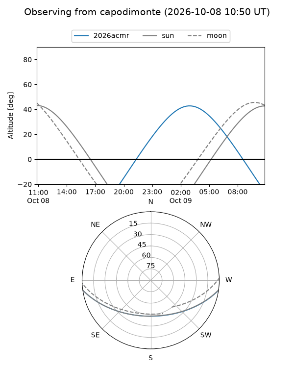
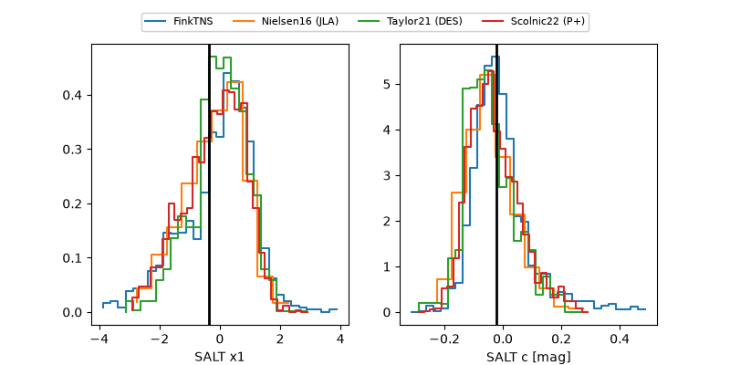

2026acmr
Target 2026acmr at 2026-10-09 12:01
Aliases and brokers:
FINK-ZTF: ztf.fink-portal.org/ZTF26abvrskw
Lasair-ZTF: lasair-ztf.lsst.ac.uk/objects/ZTF26abvrskw
ALeRCE-ZTF: alerce.online/object/ZTF26abvrskw
YSE-PZ: ziggy.ucolick.org/yse/transient_detail/2026acmr
TNS name: wis-tns.org/object/2026acmr
Direct TNS query: direct search
alt names
ZTF26abvrskw (ztf,fink_ztf)
2026acmr (tns,yse)
Coordinates:
equatorial (ra, dec) = 75.7196,-6.34574
equatorial (HMS+DMS) = 05:02:52.70,-06:20:44.66
galactic (l, b) = (205.9469,-26.99370)
Flags:
peak dt: +13.0
Photometry:
last ztfg=20.35, ztfr=20.02
3 ztfg, 2 ztfr detections
Lightcurve

Visibility



Additional plots
